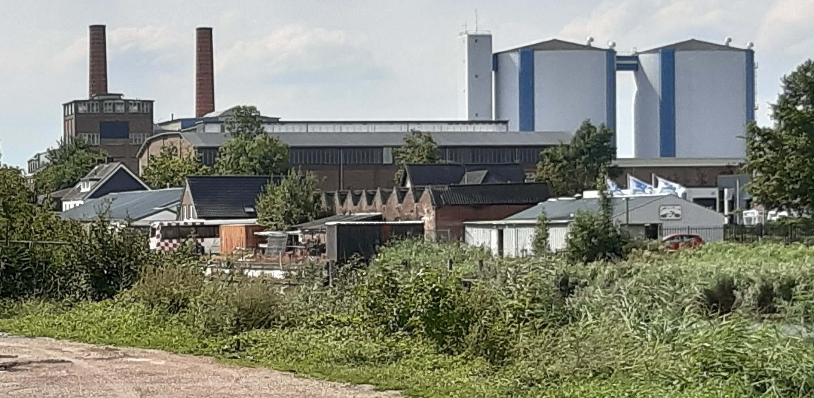

Suikerstad Zevenbergen
In het begin van de 16e eeuw is men begonnen met de inpoldering rond Zevenbergen. Daardoor kreeg de landbouw een kans zich te ontwikkelen. Graan, boekweit en vlas en vooral ook meekrap waren producten van deze streek. De laatste bleef tot in de 19e eeuw een belangrijke rol vervullen in de regio, maar door de ontwikkeling van chemische verfstoffen werd ze overbodig en maakte plaats voor de suikerbietenteelt. Van 1858 tot 1987 was Zevenbergen vooral bekend als suikerstad. Op het hoogtepunt telde Zevenbergen 4 suikerfabrieken, waaronder de eerste suikerfabriek van Nederland, de Azelma (opgericht in 1858), de Phoenix en de Dankbaarheid en later de Coöperatieve Suikerfabriek Zevenbergen. Ten behoeve van deze fabrieken werden er spoorlijnen aangelegd om de suikerbieten aan te voeren. Sinds 1854 kent Zevenbergen een spoorwegstation.
Museum Zevenbergen

De Oudheidskamer 'Willem van Strijen' is een heemkundemuseum in Zevenbergen. Het museum is gevestigd in het pand aan de Zuidhaven 17, een voormalige binnenboerderij die een woonhuis met tuitgevel en daarachter een langsdeelschuur omvat. Het pand dateert uit ongeveer 1800. In 1969 werd het pand door de gemeente aangekocht en gerestaureerd. De schuur er een cultureel centrum en het woonhuis werd een museum. Het museum bevat voorwerpen aangaande het dorpsleven omstreeks 1900, zoals een winkeltje, een slaapkamer met bedstee, een woonkeuken met plattebuiskachel, en een kelder die archeologische vondsten bevat uit het Kasteel Zevenbergen en Fort Noordam. Voorts zijn er vitrinesmet voorwerpen die door ambachtslieden werden gebruikt. Op zolder is er een collectie voorwerpen die alle op de geschiedenis van Zevenbergen betrekking hebben.